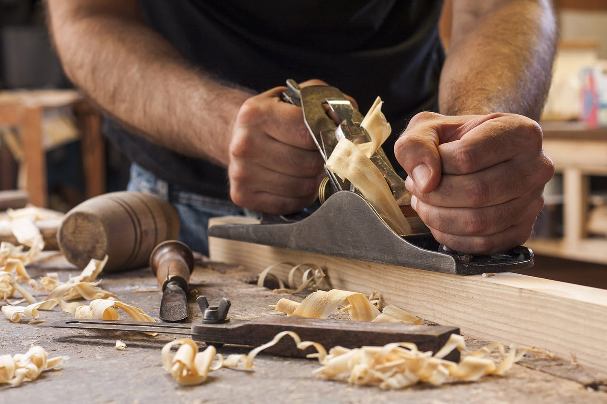
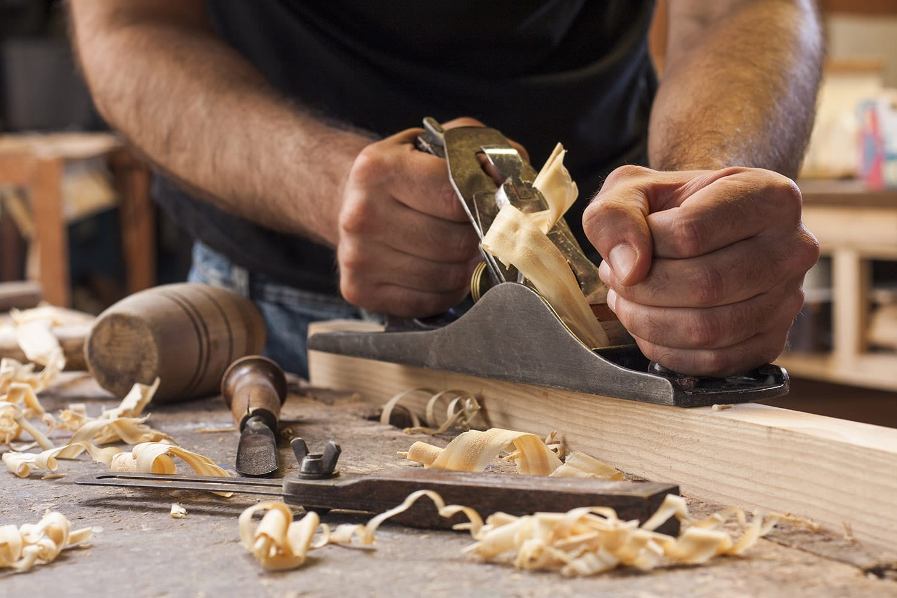

A propos de moi
Depuis mon plus vieux souvenir, j'ai toujours eu un attrait
pour le bois et les vieux meubles. Dès l'age de 7ans, je fabriquais
avec mon père mes premiers meubles. De petites commodes sans
détails mais fonctionnelles.Depuis mon plus vieux souvenir, j'ai toujours eu un attrait
pour le bois et les vieux meubles. Dès l'age de 7ans, je fabriquais
avec mon père mes premiers meubles. De petites commodes sans
détails mais fonctionnelles.
 

Mon expérience
Durant les 23 dernières années, j'ai dévelloppé mes
capacités de menuiseur pour pouvoir répondre à tout
type de commande.Je saurais mettre vos rêves au réel.
Depuis mon plus vieux souvenir, j'ai toujours eu un attrait
pour le bois et les vieux meubles. Dès l'age de 7ans, je fabriquais
avec mon père mes premiers meubles. De petites commodes sans
détails mais fonctionnelles.